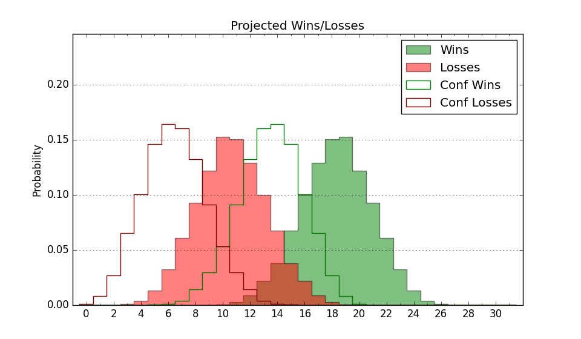

| Home | Game Probabilities | Conferences | Preseason Predictions | Odds Charts | NCAA Tournament |
| City: | Cleveland, Ohio | |
| Conference: | Horizon (1st)
| |
| Record: | 2-0 (Conf) 6-2 (Overall) | |
| Ratings: | Comp.: -1.6 (182nd) Net: 1.5 (161st) Off: 100.1 (204th) Def: 98.6 (139th) SoR: 9.6 (122nd) |
| Remaining | ||||||
|---|---|---|---|---|---|---|
| Date | Opponent | Win Prob | Pred. | |||
| 12/7 | @ St. Bonaventure (147) | 28.2% | L 62-68 | |||
| 12/10 | Kent St. (43) | 26.5% | L 62-69 | |||
| 12/18 | @ Loyola Marymount (102) | 20.1% | L 64-73 | |||
| 12/29 | @ Youngstown St. (143) | 27.5% | L 67-73 | |||
| 12/31 | @ Robert Morris (292) | 55.2% | W 66-64 | |||
| 1/5 | Milwaukee (211) | 69.1% | W 70-65 | |||
| 1/7 | Green Bay (358) | 94.8% | W 73-55 | |||
| 1/14 | @ IUPUI (362) | 87.6% | W 70-58 | |||
| 1/16 | @ Fort Wayne (248) | 48.7% | L 64-65 | |||
| 1/19 | @ Northern Kentucky (213) | 40.3% | L 60-63 | |||
| 1/21 | @ Wright St. (249) | 48.9% | L 71-72 | |||
| 1/27 | Fort Wayne (248) | 76.4% | W 68-60 | |||
| 1/29 | IUPUI (362) | 96.0% | W 74-54 | |||
| 2/2 | @ Detroit (204) | 38.6% | L 70-73 | |||
| 2/4 | @ Oakland (331) | 68.0% | W 75-70 | |||
| 2/10 | Robert Morris (292) | 80.8% | W 70-60 | |||
| 2/12 | Youngstown St. (143) | 56.4% | W 71-69 | |||
| 2/17 | Wright St. (249) | 76.5% | W 76-67 | |||
| 2/19 | Northern Kentucky (213) | 69.7% | W 64-59 | |||
| 2/23 | @ Green Bay (358) | 84.3% | W 69-59 | |||
| 2/25 | @ Milwaukee (211) | 39.6% | L 66-69 | |||
| Previous | Game Score | |||||
| Date | Opponent | Win Prob | Result | Off | Def | Net |
| 11/10 | @Cincinnati (103) | 20.2% | L 58-69 | -3.3 | 2.7 | -0.6 |
| 11/12 | @Ohio (208) | 39.0% | L 70-81 | 8.6 | -23.9 | -15.2 |
| 11/16 | @Canisius (253) | 49.5% | W 58-57 | -15.3 | 22.2 | 6.9 |
| 11/18 | Arkansas Pine Bluff (312) | 84.6% | W 67-58 | -14.6 | 7.5 | -7.1 |
| 11/23 | Chicago St. (282) | 80.0% | W 77-63 | 13.0 | -7.3 | 5.8 |
| 11/26 | @Western Michigan (344) | 73.6% | W 71-49 | 4.8 | 18.8 | 23.6 |
| 12/1 | Oakland (331) | 87.9% | W 80-64 | 0.7 | 3.9 | 4.6 |
| 12/3 | Detroit (204) | 68.2% | W 92-77 | 12.9 | -5.3 | 7.7 |
| Stats & Trends | |||||
|---|---|---|---|---|---|
| Current | Day | Week | Month | Season | |
| Composite | -1.6 | -0.1 | +1.8 | +5.4 | +5.4 |
| Comp Rank | 182 | -1 | +23 | +68 | +68 |
| Net Efficiency | 1.5 | -0.1 | +1.2 | +1000.5 | -- |
| Net Rank | 161 | -4 | +11 | -160 | -- |
| Off Efficiency | 100.1 | +0.1 | +3.6 | +100.1 | -- |
| Off Rank | 204 | -3 | +41 | -203 | -- |
| Def Efficiency | 98.6 | -0.2 | -2.4 | +900.4 | -- |
| Def Rank | 139 | -- | -33 | -138 | -- |
| SoS Rank | 341 | -4 | -40 | -340 | -- |
| Exp. Wins | 18.3 | +0.1 | +1.3 | +3.6 | +3.6 |
| Exp. Conf Wins | 13.5 | +0.1 | +1.2 | +2.5 | +2.5 |
| Conf Champ Prob | 27.7 | +0.1 | +11.3 | +16.4 | +16.7 |

| Advanced Stats | ||
|---|---|---|
| Stat | Value | Rank |
| Off Eff FG % | 0.468 | 280 |
| Off Ast Ratio | 0.131 | 239 |
| Off ORB% | 0.330 | 51 |
| Off TO Rate | 0.148 | 92 |
| Off FT Ratio | 0.234 | 330 |
| Def Eff FG % | 0.465 | 82 |
| Def Ast Ratio | 0.138 | 166 |
| Def ORB% | 0.352 | 345 |
| Def TO Rate | 0.176 | 104 |
| Def FT Ratio | 0.386 | 300 |